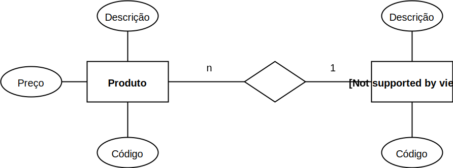
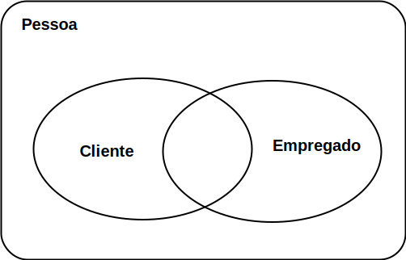

Aula 3 (2019-04-09)
Projeto de banco de dados
Modelo de banco de dados
-
Modelo de (banco) dados: descrição formal da estrutura de um banco de dados;
-
Cada apresentação do modelo recebe a denominação esquema de banco de dados;
-
Um mesmo modelo pode ser apresentados em diferentes esquemas. Um esquema é descrição do modelo; o modelo é o que engloba (abstrai) os esquemas. Basicamente um mesmo modelo é apresentado por vários esquemas;
-
Desafio: mapear um minimundo para um modelo de banco. Muitos consguem usar um banco de dados, pouco conseguem modelar o banco consistente. Se você tiver essa competência, será um diferencial, pois os conceitos de modelagem de banco podem ser extendidos para outras disciplinas/domínios.
Modelo conceitual (nível alto)
-
A base do modelo entidade-relacionamento (MER), é representar o mundo real por meio de conjuntos de objetos chamados entidades e relacionamentos;
-
A junção ordenada/lógica destes tipos de objetos representa a estrutura/esquema do mundo real. Ou seja, deve suportar o armazenamento de dados que reflitam a situação do mundo real;
-
A técnica mais difundida de modelagem conceitual é essa abordagem entidade-relacionamento (ER). Nesta técnica, um modelo conceitual é usualmente representado através de um diagrama, chamado diagrama entidade-relacionamento (DER).
-
Ajuda na comunicação com os usuários não-técnicos;
-
As três noções básicas empregadas pelo MER: conjunto de entidades, conjunto de relacionamentos, atributos;
-
Retângulos são entidades;
- Elipses são atributos;
- Losangos são relacionamentos que também podem ser nomeados;
- As cardinalidades são indicadas com número ou letra (1, n, m por exemplo);
-
Atributos sublinhados indicam atributo único, isto é, não pode existir repetição dentro de uma tabela da coluna desse atributo. Isso ajuda a identificar de forma única uma entidade.
Exemplo 3.3
Uma entidade quando levada para um DB (populado) gera instâncias para o banco de dados. Por exemplo, uma entidade produto tem um atributo nome = "iPhone" quando o DB é populado.
Dessa forma, um código único (atributo único) deve ser atribuído para esse iPhone (1 por exemplo); pois uma instância de produto com nome "Galaxy" não pode ter o mesmo código.
Isso gera uma identidade única para cada instância da tabela Produto do banco de dados.
A figura a seguir ilustra um DER de duas entidades: Produto e Tipo de Produto.

Entidades
Definições:
- Uma entidade é uma “coisa” ou um “objeto” do mundo real que pode ser identificada(o) de uma forma unívoca em relação a todos os outros objetos (Korth);
- Uma entidade pode ser concreta, como uma pessoa ou um livro, ou pode ser abstrata, como um empréstimo ou uma viagem (Korth);
- Uma entidade é “algo” do mundo real, com uma existência independente (Navathe).
Entidades não são, necessariamente, conjuntos separados ou sempre disjuntos. Por exemplo:
- O conjunto de todos os clientes de um banco constituem o conjunto entidade cliente; o conjunto de todos os empregados do banco constituem o conjunto entidade empregado; a entidade pessoa pode pertencer ou ao conjunto cliente, ou ao conjunto empregado ou a ambos ou a nenhum deles.

Exercício 2.1 para casa
Gerar um diagrama de entidade e relacionamento com as seguintes entidades: Aluno, Disciplina, Professor e Curso. Use poucos atributos nas entidades.
Modelo lógico (nível intermediário)
Um modelo lógico é uma descrição de um banco de dados no nível de abstração visto pelo usuário do SGBD. Assim, o modelo lógico é dependente do tipo particular de SGBD que está sendo usado.
Em um SGBD relacional, os dados estão organizados na forma de tabelas. As o esquema e tabelas a seguir são das entidades Tipo de Produdo e Produto respectivamente.
TipoDeProduto(CodigoTipoProduto, DescTipoProduto)
Produto(CodigoProduto, DescProduto, PrecoProduto, CodigoTipoProduto)
- CodigoTipoProduto referencia a entidade TipoDeProduto.
TipoDeProduto:
| CodigoTipoProduto | DescTipoProduto |
|---|---|
| 1 | Computador |
| 2 | Impressora |
Produto:
| CodigoProduto | DescProduto | PrecoProduto | CodigoTipoProduto |
|---|---|---|---|
| 1 | iMac | 20.000 | 1 |
| 2 | Dell | 5.000 | 1 |
| 3 | Jato de tinta | 1.000 | 2 |
| 4 | Laser | 2.000 | 2 |
Exercício 2.2 para casa
Gerar o esquema lógico do exercídio 2.1.
Atributos
-
Propriedades particulares que descrevem uma entidade;
-
Para cada atributo existe um conjunto de valores possíveis, chamado domínio;
-
Domínio -> tipos de dados (inteiro, decimal, etc)
Tipos de atributos que ocorrem no modelo ER:
-
Simples e Compostos;
-
Univalorados e Multivalorados;
-
Nulos;
-
Armazenados versus Derivados;
-
Atributos Complexos.
Atributos simples ou compostos
atributos compostos, diferentemente dos simples (atômicos), são divididos em partes (em outros atributos).
- nome_cliente: prenome, nome_intermediário e sobrenome;
- Estes atributos podem ser hierarquizados.
Projeto de BD
Duas fases:
- Modelagem conceitual;
- Projeto lógico.
Modelagem idependente do SGDB
-
Levantamento e análise de requisitos
Levantamento de requisitos é parte primeira no projeto do banco de dados que se for não for bem feito, pode levar facilmanente à ruína do sistema de banco de dados. Isso deve ser feito de forma iterativa, ou seja, o projeto do banco é constante enquanto é pertinente. Deve ser feito sempre que for necessário para o mesmo banco.
A descrição deve ser concisa dos requisitos de dados para evitar interpretações erradas.
1.1 Requisitos funcionais;
Exemplo 3.1
Uma relatório de notas do alunos deve ser mostrado ao usuário do sistema junto com a disciplina e professor responsável pela disciplina.
Questões:
- Quais notas? Todas as notas? Notas de prova e trabalhos?
- Mostrar apenas nome do aluno, ou mostrar também seu RA?
1.1 Requisitos de dados;
Exemplo 3.2
Cada professor pode ter mais do que uma disciplina, e uma disciplina pode ter até 3 professor;
Papel do projetista perguntar e questionar esses tipso de requisitos de dados.
-
Análise funcional
2.1 Especificação de transação de alto nível.
Exemplo 3.3
O usuário do banco de dados deve "selecionar" as entidades professor, aluno, disciplina e notas; relacionar essas entidades fazendo "junções" delas para mostrar de forma tabular as notas dos alunos.
-
Projeto conceitual
3.1 Modelo conceitutal: um diagrama (esquema) de entidade-relacionamento.
Modelagem dependente do SGDB
-
Projeto lógico: esquema lógico → projeto físico;
-
Projeto do programa de aplicação → implementação das transações;